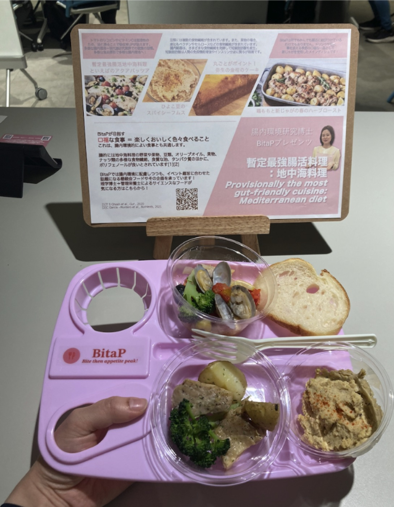
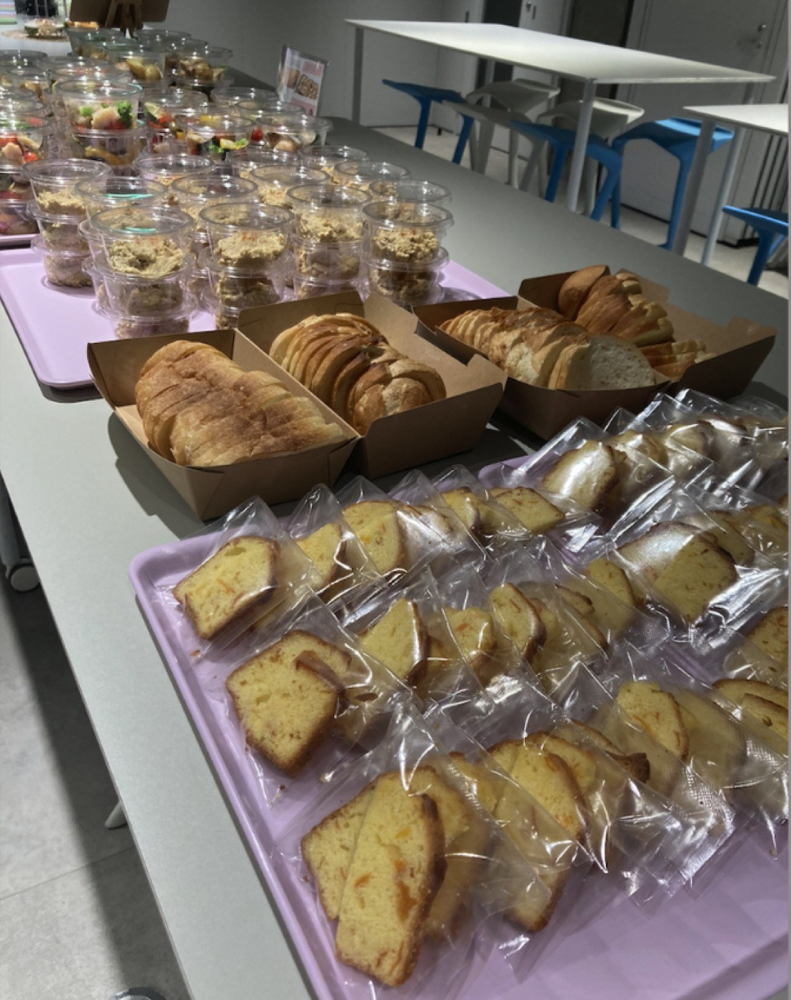
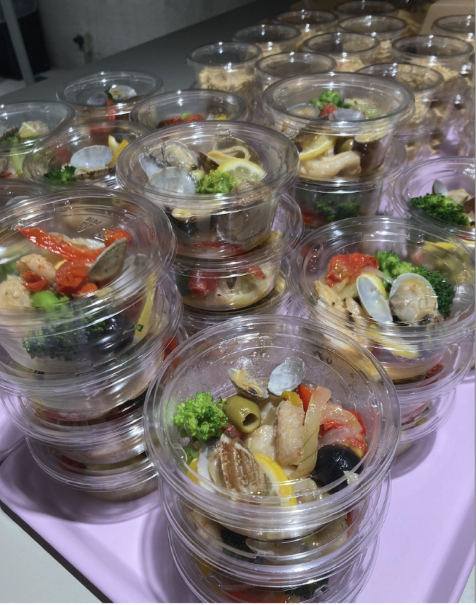
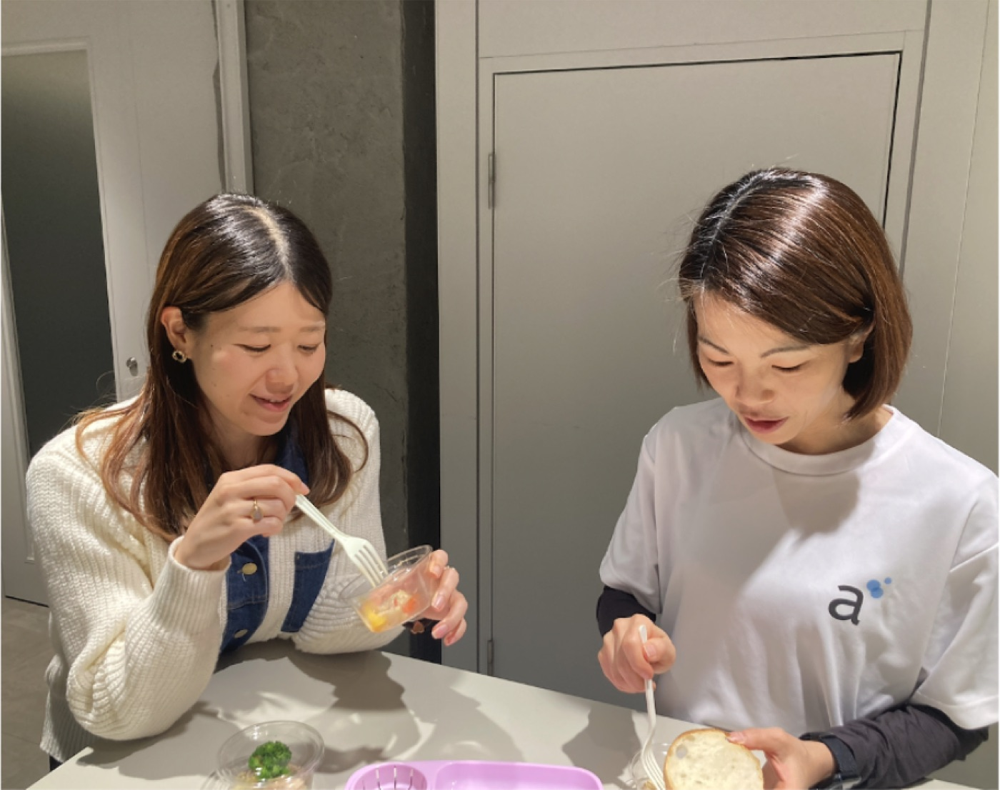
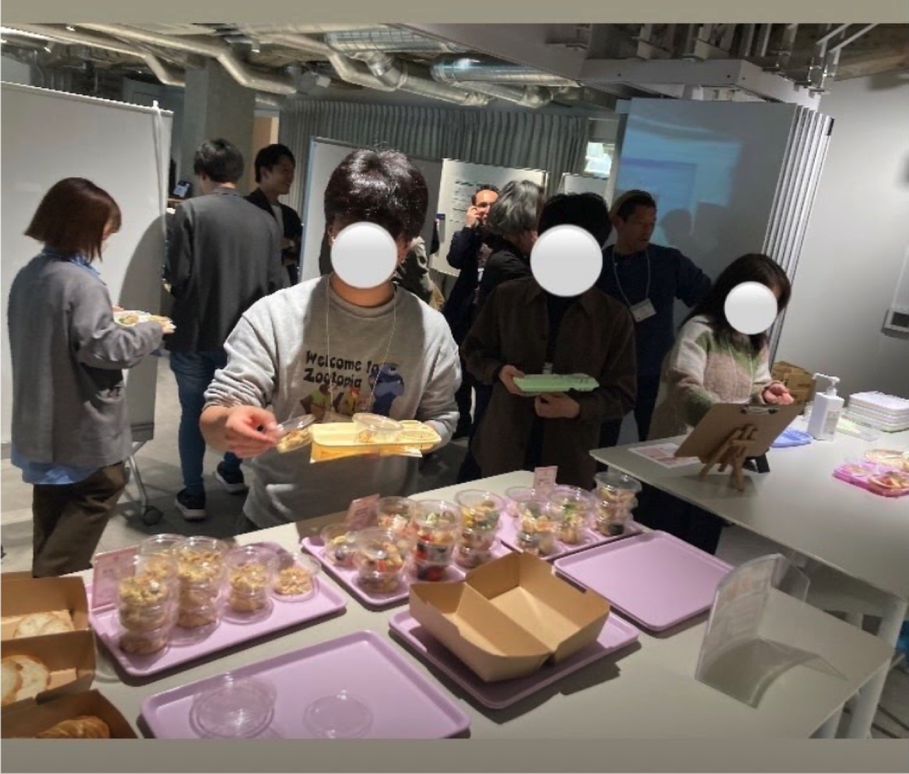
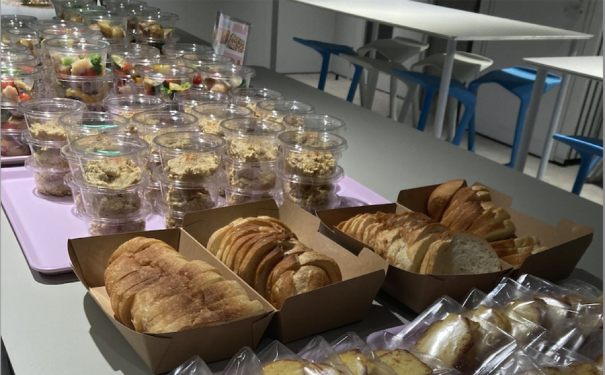

2026/03/06
【登壇情報】【事業事例】研究者が集うイベントでの“暫定最強腸活”ケータリングを提供しました
2026年3月6日、株式会社BitaPは、アカデミスト株式会社様が主催する「『基礎研究で、世界を変える。』若手研究者20名の目指す未来」において、懇親会のフード提供の企画を担当いたしました。
当日は、学術系クラウドファンディングのプロジェクトの一環である「academist Prize for DeepTech」の採択者である様々な分野の研究者や、サイエンスコミュニケーター、academist Prize5期生の採択者、協賛企業など50名弱が集まり、研究者、大学院生、企業、academistサポーターらが議論と交流を深めました。
BitaPは、昨今の腸内細菌研究で名高い地中海料理をテーマに、腸内環境への配慮を取り入れたメニュー企画・ケータリング手配・ポップ制作・当日運営サポートを一貫して行いました。この日は研究者が集う場ということもあり、地中海料理と腸内環境の関連性の最新研究をご紹介するショートトークも提供しました。
【イベント主催・ご担当者様からのコメント】
・完全栄養食などとの方向性の違いとして、味や食の楽しみを追求するという姿勢を実際に食べて見て体感することができました。
・参加者の皆様からの評判も良く、また、運営チームもイベントを進行しながら一部のメニューをいただきましたが、幸せな気持ちで美味しくいただくことができました。
【当日のフードテーマ】
「暫定最強腸活：地中海料理」
地中海料理には多様な野菜や果物、豆類、オリーブオイルが使用されており、腸内細菌の多様性や、健康への寄与が報告されています。（T S Ghosh et al., Gut, 2020., C Garcia–Montero et al., Nutrients, 2021）
【当日のフードメニュー】
● 鶏ももと新じゃがの春のハーブロース鶏肉をフレッシュのローズマリーやタイムなどのハーブに一晩漬け込み、オーブンでじっくり焼き上げました。付け合わせのジャガイモも、鶏肉とは時間を変えてゆっくりとオーブンでローストしています。
● 暫定最強腸活：アクアパッツア
魚介の旨みをたっぷり引き出し、さまざまな野菜と一緒にやさしく煮込みました。 野菜は群馬県の産直野菜を使用しています。
● ひよこ豆のスパイシーフムス＋小麦からこだわったバゲット
豆の食感を少し残しながら、練りごまとフレッシュレモンで食べやすく仕上げました。 アクセントとして新玉ねぎとベーコンを加えています。
パンは店主が粉から拘り添加物を使わずに焼き上げています。日持ちはしませんが、身体にやさしい素材にこだわっています。
● まるごと金柑のパウンドケーキ
宮崎県産の金柑を丸ごと甘露煮にしてから生地に合わせ、しっとり焼き上げました。
腸内環境によい食とは単一の食材を食べ続けることではなく、多品目の食材をバランスよく食べ、それを継続することです。
そのような食事は、ついつい箸が進む「口福」な食事といえます。
今後もBitaPは、「健康なだけではなく、口福な食事」を目指した事業を展開してまいります！
BitaPのケータリングにご関心のある方は以下よりぜひご連絡ください。
お問い合わせフォーム→ https://forms.gle/QPHj2dkgMYtEogHS8





